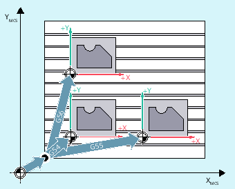

The G54 to G57 and G505 to G599 commands activate the settable work offsets for offsetting the workpiece coordinate system compared with the base zero system (BZS) set via the user interface.
| Call of the 1st to 4th settable work offset (WO) | |
| Call of the 5th to 99th settable work offset | |
| Deactivation of the current settable work offset | |
G500=Zero frame: (default setting; contains no offset, rotation, mirroring or scaling) | Deactivation of the settable work offset until the next call, activation of the entire basic frame ($P_ACTBFRAME). | |
G500 not equal to 0: | Activation of the first settable work offset ($P_UIFR[0]) and activation of the entire basic frame ($P_ACTBFRAME) or possibly a modified basic frame is activated. | |
| G53 suppresses the settable work offset and the programmable work offset non-modally. | |
| G153 has the same effect as G53 and also suppresses the entire basic frame. | |
| SUPA has the same effect as G153 and also suppresses:
| |
Three workpieces that are arranged on a palette according to the work offset values G54 to G56 are to be machined in succession. The machining sequence is programmed in subprogram L47.
| Program code | Comment |
|---|---|
| N10 G0 G90 X10 Y10 F500 T1 | ; Approach |
| N20 G54 S1000 M3 | ; Call of the first WO, spindle clockwise |
| N30 L47 | ; Program pass as subprogram |
| N40 G55 G0 Z200 | ; Call of the second WO, Z via obstruction |
| N50 L47 | ; Program pass as subprogram |
| N60 G56 | ; Call of the third WO |
| N70 L47 | ; Program pass as subprogram |
| N80 G53 X200 Y300 M30 | ; Suppress work offset, end of program |
See also:
Settable work offset (G54 to G57, G505 to G599, G53, G500, SUPA, G153): Further information
Deselect frame (G53, G153, SUPA, G500)